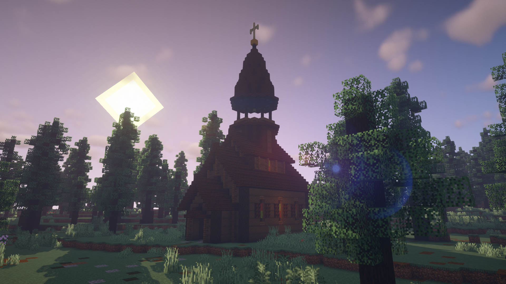

En vous donnant le droit de gérer votre propre monde, nous vous responsabilisons à son entretien, sa gestion et le respect des règles.
Si le serveur ne demande pas de respecter des règles strictes, il demande en revanche aux joueurs et joueuses un minimum de sens commun. Cela implique d'adopter un comportement compatible avec une vie en communauté, entre-autres : pas d'incitation à la haine et du respect envers autrui.
L'équipe ne tolèrera pas de monde ni de comportement ne s'alignant pas avec ces principes.
Cela étant dit, il est évidemment possible de ne pas participer à la communauté, mais de simplement utiliser le serveur comme une plateforme pour jouer avec vos amis. Auquel cas, vous définirez vous-même vos limites, les règles ci-dessus s'appliquant à vos interactions avec le reste du serveur.
Le serveur propose aux joueurs et joueuses de créer des mondes dans lesquels ils pourront évoluer librement et sans contrainte. Pour se faire, il est indispensable de trouver un emplacement libre dans le hub du serveur. Cet emplacement deviendra ensuite le votre; vous pourrez le personnaliser et y disposer différents coffres vous permettant d'accèder à vos différents mondes.
La carte du hub regorge de petits villages, de sanctuaires, d'églises et de cavernes à explorer pour trouver l'endroit parfait où vous installer.
En revanche, si vous ne souhaitez pas prendre le temps d'explorer, vous pouvez utiliser la commande suivante qui vous permettra de vous téléporter sur un emplacement libre aléatoire :
{% highlight shell%}/create{% endhighlight %}
Les autres joueurs pourront, au grés de leurs ballades dans le hub, trouver votre emplacement, constituant la vitrine vers vos différents mondes.
Pour revendiquer un emplacement, il vous suffit de poser un pupitre directement sur le bloc de redstone. Le pupitre constitue alors votre point de gestion, c'est ici que vous pouvez changer de mode de jeu pour personnaliser votre emplacement, et configurer vos mondes.
Vous pourez ensuite disposer les coffres dans votre emplacement et rentrer dans une interface pour les paramètrer, installer des cartes spécifiques, autoriser les joueurs, définir le mode de jeu et la difficulté.
Pour gérer les messages entre joueurs, le serveur dispose d'un plugin de chat.
Par défaut, les utilisateurs se trouvent dans le canal global
Vous pouvez naviguer d'un monde à un autre avec le même inventaire pour aller aider vos amis, leur donner des ressources, ou partager un moment de pêche. Pour celà, il faut que les deux administrateurs des mondes décident de lier leur monde.
La commande {% highlight shell%}/linkworld{% endhighlight %} enverra une requête à votre ami qu'il pourra ensuite accepter avec la commande {% highlight shell%}/linkaccept{% endhighlight %}
Vous pouvez consulter la liste de vos mondes liés avec la commande {% highlight shell%}/linklist{% endhighlight %}
Si jamais vous souhaitez refuter l'accès à votre monde, vous pouvez utiliser la commande {% highlight shell%}/linkdestroy username{% endhighlight %}
La carte du serveur est une carte de 3500 par 3500 blocs explorable librement et sans contraintes. Elle regorge de petits secrets vous permettant de débloquer certains aspect du serveur, notamment la gestion des mondes multiples et d'autres aspects de personnalisation.
Elle permet aussi de rendre tangible les mondes des joueurs et d'encourager l'exploration et la découverte, elle permet aux joueurs de se rencontrer, de fonder des villages et de traverser des paysages inspirés par l'Europe de l'est.
